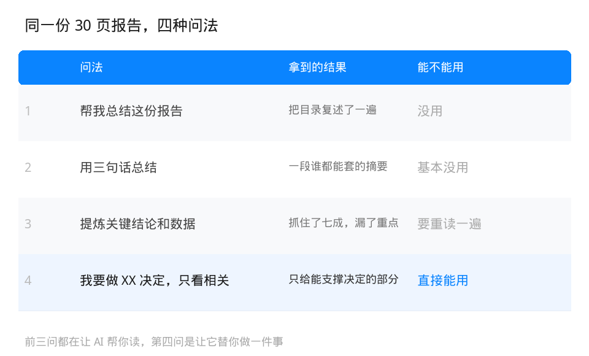

实测记录
做的事：读完一份 30 页的行业报告，并给出结论
原来：约 2 小时 现在：15 分钟
代价：前三种问法全废，白读了一个下午
三十页的报告，认真读完要两个小时。
交给 AI，理论上十分钟就够。但我第一次用的时候，它给了我一份「什么都没说」的摘要。
后来我把问法改了四次，才拿到能用的东西。
前三次都错在同一件事上：我把 AI 当成了摘要机。

同一份报告，四种问法的结果
1
前三种问法，错在哪
第一种：「帮我总结这份报告」。
它把目录复述了一遍，然后告诉我「本报告共分五章，分别讨论了……」。
这是我见过最没用的摘要。我翻目录只要十秒。
第二种：「用三句话总结」。
这次好一些，我拿到了一段结构完整的摘要。问题是这段话套在任何一个行业报告上都成立，看完我还是不知道它说了什么。
第三种：「提炼关键结论和数据」。
这是最接近的一次。它列出了七条结论，其中五条确实重要。
但我还是得翻回原文核对，因为我不知道它漏掉的那三成里，有没有我真正需要的那句。
三次失败的原因一样：我在让它「读」，而不是让它「用」。
2
第四种：先说清楚我要做什么决定
我换了开头。不再说「帮我总结」，而是先交代处境：
我下周要向老板申请一笔市场预算，需要在这份报告里找到三个东西：这个行业明年还会不会增长、竞争对手的钱花在哪、有没有数据能支撑「晚投入会吃亏」。
然后加一句：只回答这三个问题，其余内容不用给我。
它给的答案不一样了。每一条都挂在原文的哪一页，找不到的地方直接说「报告里没有提到」。
那一刻我意识到，前面三个下午都白花了。
3
那 15 分钟是怎么过的
前 5 分钟，先看目录和图表标题。不看正文。目的是知道这份报告能回答什么、不能回答什么。
中间 5 分钟，写下我要做的决定。一句话就够，比如「要不要申请这笔预算」。写不出这句话，说明还没准备好读。
最后 5 分钟，让 AI 只回答和这个决定有关的问题。它回完，我挑两处回原文核对。
剩下的时间，我去做原来根本没空做的事：想清楚这个决定到底该怎么做。
4
三个坑
坑一，它会替你补全没写的结论。
报告里只给了趋势，没给建议。你问「所以该不该投」，它会给一个听起来很有道理的建议——那是它猜的，不是报告说的。
坑二，长文档会被截断。
三十页以上，直接贴进去很可能只读到一半。它会很自然地只总结前半部分，不告诉你后面没读。
坑三，引用页码一定要核对。它给的页码经常差一两页。结论可以用，页码不能直接信。
5
可以直接抄的提示词
把方括号换成你的情况，接在报告原文后面：
我要做[一个具体决定，例如：下周申请一笔市场预算]。
请只针对下面三个问题回答，其余内容不用给我：
1. [问题一]
2. [问题二]
3. [问题三]
要求：
- 每条答案标注来自报告的第几页第几节
- 报告里没有写的，直接说「报告未提及」，不要推测
- 不要给建议，只给报告里的事实和数据
- 如果前后数据矛盾，把两处都列出来
「不要给建议」这句反直觉，但它很关键。
建议我自己会想，我要的是它没有立场地把事实捞出来。
说点实话
两小时压到十五分钟，这个数字好看。
但真正起作用的不是那十五分钟，是我终于逼自己写下了「我要做什么决定」。
写不出这句话的时候，读多久都是白读。
AI 让「读完」变便宜了。
所以「为什么读」变贵了。
这个系列已经写了 Excel、PPT、周报、会议纪要、长文档五件事。
下一篇我想换个角度：这一年里，哪些事我真的再也没手做过。关注一下，别错过。
关注后回复「读报告」，拿这段提示词、四种问法的对比表，还有一份我自己用的「读前五问」清单。
文中为本人实测，文档类型不同结果会有差异。